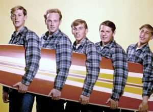
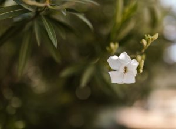

Coursework Part 1 Renaissance period Stylistic Techniques Exercise 1.1 – Palestrina’s Kyrie from Missa Brevis Pedro September 19, 2022
Coursework Listening Log Listening Log Part 1 Renaissance period Stylistic Techniques Research point 1.0 – Renaissance madrigals Pedro September 16, 2022
Listening Log Stylistic Techniques Listening to Oscar Peterson – Hymn To Freedom Pedro September 15, 2022
Coursework Part 1 Renaissance period Stylistic Techniques Exercise 1.0 – Carlo Gesualdo: Beltà, poi che t’assenti Pedro September 14, 2022
Listening Log Listening Log Part 1 Renaissance period Stylistic Techniques Listening to Gesualdo Pedro September 14, 2022
Assignments Composing Music Part 5 Exploring harmony Revision of Assignment 5 after tutor feedback Pedro January 6, 2022
Assignments Composing Music Part 4 Exploring counterpoint Revision of Assignment 4 after tutor feedback Pedro January 5, 2022
Assignments Composing Music Part 3 Round, descants, polyphony Revision of Assignment 3 after tutor feedback Pedro January 4, 2022
Composing Music Listening Log Listening Log Part 5 Exploring harmony Listening to Claude Bolling and Jean-Pierre Rampal – Baroque and Blue Pedro December 24, 2021
Assignments Composing Music Part 5 Exploring harmony Reflections on Assignment 5 Pedro December 15, 2021
Assignments Composing Music Part 5 Exploring harmony Assignment 5: Harmony in the round Pedro December 14, 2021
Composing Music Listening Log Listening Log Part 5 Exploring harmony Listening to Kaija Saariaho – Vista Pedro December 10, 2021
Composing Music Coursework Part 5 Exploring harmony Project 14 – Improvisation on a dominant Pedro December 9, 2021
Composing Music Coursework Part 5 Exploring harmony Project 13: Elaborate cadences Pedro December 6, 2021
Composing Music Listening Log Listening Log Part 5 Exploring harmony Listening to Astor Piazzola – Las Cuatro Estaciones Porteñas Pedro December 4, 2021
Composing Music Listening Log Listening Log Part 5 Exploring harmony Listening to Richard Wagner – Das Rheingold, Prelude Pedro December 2, 2021
Composing Music Listening Log Listening Log Part 5 Exploring harmony Listening to Beethoven – Piano Concerto No.5 in Eb, Op.73 I. Allegro Pedro November 25, 2021
Composing Music Listening Log Listening Log Part 5 Exploring harmony Researching Cadenza Pedro November 20, 2021
Assignments Composing Music Part 4 Exploring counterpoint Reflections on Assignment 4 Pedro November 15, 2021
Composing Music Listening Log Listening Log Part 4 Exploring counterpoint Listening to Bach’s Fugues Pedro November 15, 2021
Composing Music Listening Log Listening Log Part 4 Exploring counterpoint Listening to Stravinsky – Rite Of Spring Pedro November 11, 2021
Composing Music Coursework Part 4 Exploring counterpoint Project 12: Two-Part Invention Pedro November 8, 2021
Composing Music Listening Log Listening Log Part 4 Exploring counterpoint Listening to Scott Joplin – Maple Leaf Rag Pedro November 4, 2021
Composing Music Listening Log Listening Log Part 4 Exploring counterpoint Listening to Joseph Bologne, Chevalier de Saint-Georges – Violin Concerto No. 9 in G Major, Op. 8 Pedro October 27, 2021
 Composing Music Listening Log Listening Log Part 4 Exploring counterpoint Listening to Beach Boys – God Only Knows Pedro October 22, 2021
Composing Music Coursework Part 4 Exploring counterpoint Project 11 – Inventing free counterpoint Pedro October 21, 2021
Assignments Composing Music Part 3 Round, descants, polyphony Reflections on Assignment 3 Pedro October 15, 2021
Composing Music Listening Log Listening Log Part 3 Round, descants, polyphony Listening & Researching Polyphony Pedro October 10, 2021
Composing Music Coursework Part 3 Round, descants, polyphony Project 10 – A contrapuntal trial Pedro October 5, 2021
Composing Music Coursework Part 3 Round, descants, polyphony Project 9 – Descants Pedro September 30, 2021
Composing Music Listening Log Listening Log Part 3 Round, descants, polyphony Listening to Descants Pedro September 29, 2021
Composing Music Coursework Part 3 Round, descants, polyphony Project 8 – Rounds and Catches Pedro September 27, 2021
Composing Music Listening Log Listening Log Part 3 Round, descants, polyphony Listening to Stevie Wonder – Overjoyed Pedro September 24, 2021
Composing Music Listening Log Listening Log Part 3 Round, descants, polyphony Listening to Rounds Pedro September 21, 2021
Assignments Composing Music Part 2 Exploring melody and scales Reflections on Assignment 2 Pedro September 15, 2021
Composing Music Listening Log Listening Log Part 2 Exploring melody and scales Listening to Woodinwind solos Pedro September 10, 2021
Composing Music Listening Log Listening Log Part 2 Exploring melody and scales Listening to Tim Maia – Não Quero Dinheiro Pedro September 6, 2021
Composing Music Listening Log Listening Log Part 2 Exploring melody and scales Thoughts on counterpoint Pedro September 3, 2021
Composing Music Coursework Part 2 Exploring melody and scales Project 7 – Exploring different scales Pedro September 2, 2021
Composing Music Listening Log Listening Log Part 2 Exploring melody and scales Woodwind Instruments Pedro August 31, 2021
Composing Music Coursework Listening Log Listening Log Part 2 Exploring melody and scales Project 6 – Analyzing a solo composition Pedro August 26, 2021
Composing Music Listening Log Listening Log Part 2 Exploring melody and scales Listening to Claude Debussy – La Fille aux Cheveux de Lin, Prélude No.8 Pedro August 24, 2021
 Composing Music Listening Log Listening Log Part 2 Exploring melody and scales Listening to Mo Li Hua Pedro August 21, 2021
Composing Music Coursework Part 2 Exploring melody and scales Project 5 – Pentatonic Melody Pedro August 20, 2021
Composing Music Listening Log Listening Log Part 2 Exploring melody and scales Thoughts on the Pentatonic Scale Pedro August 18, 2021
Composing Music Listening Log Listening Log Part 1 Exploring rhythm Listening to Carlos Chávez – Toccata for Percussion Pedro August 5, 2021
Composing Music Coursework Part 1 Exploring rhythm Project 3 – Three and more instruments Pedro July 27, 2021
Composing Music Listening Log Listening Log Part 1 Exploring rhythm Listening to Boris Blacher – Variations On A Theme of Paganini Pedro July 12, 2021
Composing Music Listening Log Listening Log Part 1 Exploring rhythm Researching Variable Metre Pedro July 11, 2021
Composing Music Listening Log Listening Log Part 1 Exploring rhythm Listening to Rodion Shchedrin – Carmen Suite Pedro July 5, 2021
Composing Music Listening Log Listening Log Part 1 Exploring rhythm Listening to System Of A Down – Chop Suey! Pedro July 2, 2021
Composing Music Listening Log Listening Log Part 1 Exploring rhythm Listening to Arthur Honegger – Cello Sonata, H. 20: III. Presto Pedro June 19, 2021